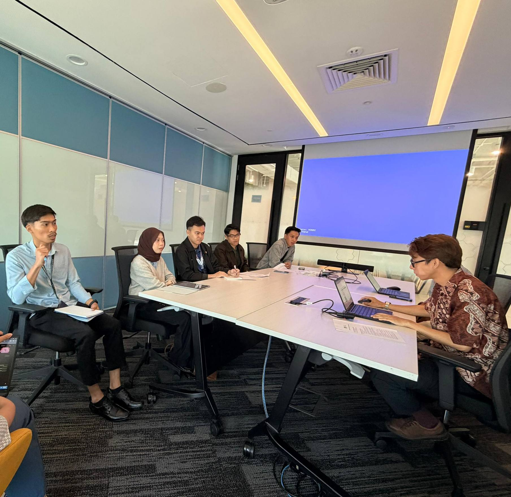

Project Summary
Conclusion

Core Value
The IT Asset Management System acts as a highly critical component in supporting the smooth, day-to-day corporate operations of TRX City Sdn Bhd.
Technological Edge
Barcode technology and centralized databases empower the IT Department to track, audit, and manage hardware systematically, far surpassing traditional methods.
Strategic Solutions
Internal constraints, such as reliance on manual input and isolated data, can be effectively resolved through comprehensive API system integration proposals.
Future Readiness
Long-term investments protect assets from loss and ensure TRX City remains ready to drive world-class infrastructure development with solid IT support.